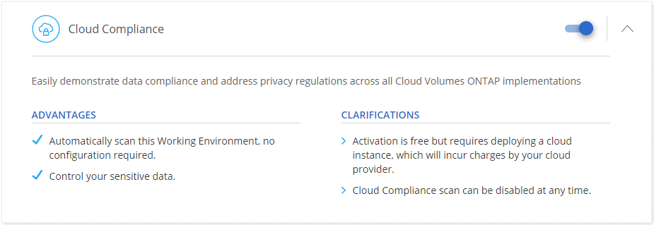
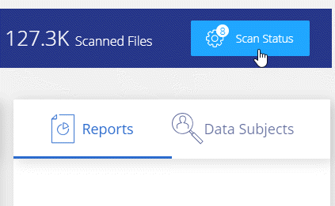

Getting started with Cloud Compliance for Cloud Volumes ONTAP Edit on GitHub Request doc changes
Contributors
Complete a few steps to get started with Cloud Compliance for Cloud Volumes ONTAP in AWS or Azure.
Quick start
Get started quickly by following these steps or scroll down to the remaining sections for full details.
 Verify that your configuration can meet the requirements
Verify that your configuration can meet the requirements
-
The Cloud Compliance instance needs outbound internet access.
Cloud Manager deploys the instance in the same subnet in which Cloud Manager is running. If Cloud Manager is on-prem, it deploys Cloud Compliance in same VPC or VNet as the first Cloud Volumes ONTAP system in the request.
-
Users need to access the Cloud Manager interface from a host that has a direct connection to AWS or Azure, or from a host that’s inside the same network as the Cloud Compliance instance (the instance will have a private IP address).
-
Cloud Manager needs permissions to deploy resources and create security groups. Check the latest Cloud Manager policy.
-
16 vCPUs are required for the Cloud Compliance instance. Ensure that you haven’t reached your cloud provider’s vCPU limit in Cloud Manager’s region for On-Demand Standard instances (AWS) or Standard DSv3 Family (Azure).
-
The Cloud Compliance instance needs to remain running so it can scan volumes.
 Enable Cloud Compliance on Cloud Volumes ONTAP
Enable Cloud Compliance on Cloud Volumes ONTAP
-
New working environments: Be sure to keep Cloud Compliance enabled when you create the working environment (it’s enabled by default).
-
Existing working environments: Click Compliance, optionally edit the list of working environments, and click Show Compliance Dashboard.
 Ensure access to volumes
Ensure access to volumes
Now that Cloud Compliance is enabled, ensure that it can access volumes.
-
The Cloud Compliance instance needs a network connection to each Cloud Volumes ONTAP subnet.
-
Security groups for Cloud Volumes ONTAP must allow inbound connections from the Cloud Compliance instance.
-
NFS Volume export policies must allow access from the Cloud Compliance instance.
-
Cloud Compliance needs Active Directory credentials to scan CIFS volumes.
Click Compliance > CIFS Scan Status > Edit CIFS Credentials and provide the credentials. The credentials can be read-only, but providing admin credentials ensures that Cloud Compliance can read data that requires elevated permissions.
 Ensure connectivity between Cloud Manager and Cloud Compliance
Ensure connectivity between Cloud Manager and Cloud Compliance
-
The security group for Cloud Manager must allow inbound and outbound traffic over port 80 to and from the Cloud Compliance instance.
-
If your AWS network doesn’t use a NAT or proxy for internet access, then the security group for Cloud Manager must allow inbound traffic over TCP port 3128 from the Cloud Compliance instance.
Reviewing prerequisites
Review the following prerequisites to make sure that you have a supported configuration before you enable Cloud Compliance. You’ll need to ensure connectivity between components after you enable Cloud Compliance. That’s covered below.
- Enable outbound internet access
-
Cloud Compliance requires outbound internet access. If your virtual network uses a proxy server for internet access, ensure that the Cloud Compliance instance has outbound internet access to contact the following endpoints:
Endpoints Purpose https://cloudmanager.cloud.netapp.com
Communication with the Cloud Manager service, which includes Cloud Central accounts.
https://netapp-cloud-account.auth0.com
Communication with NetApp Cloud Central for centralized user authentication.
https://cloud-compliance-support-netapp.s3.us-west-1.amazonaws.com
https://hub.docker.comProvides access to software images, manifests, and templates.
https://kinesis.us-east-1.amazonaws.com
Enables NetApp to stream data from audit records.
https://cognito-idp.us-east-1.amazonaws.com
https://cognito-identity.us-east-1.amazonaws.comEnables Cloud Compliance to access and download manifests and templates, and to send logs and metrics.
- Verify web browser connectivity to Cloud Compliance
-
The Cloud Compliance instance uses a private IP address to ensure that the indexed data isn’t accessible to the internet. As a result, the web browser that you use to access Cloud Manager must have a connection to that private IP address. That connection can come from a direct connection to AWS or Azure (for example, a VPN), or from a host that’s inside the same network as the Cloud Compliance instance.
If you’re accessing Cloud Manager from a public IP address, then your web browser probably isn’t running on a host inside the network. - Ensure that Cloud Manager has the required permissions
-
Ensure that Cloud Manager has permissions to deploy resources and create security groups for the Cloud Compliance instance. You can find the latest Cloud Manager permissions in the policies provided by NetApp.
- Check your vCPU limits
-
Ensure that your cloud provider’s vCPU limit allows for the deployment of an instance with 16 cores. You’ll need to verify the vCPU limit for the relevant instance family in the region where Cloud Manager is running.
In AWS, the instance family is On-Demand Standard instances. In Azure, the instance family is Standard DSv3 Family.
For more details on vCPU limits, see the following:
- Ensure that you can keep Cloud Compliance running
-
The Cloud Compliance instance needs to stay on to continuously scan your data.
Enabling Cloud Compliance on a new working environment
Cloud Compliance is enabled by default in the working environment wizard. Be sure to keep the option enabled.
-
Click Create Cloud Volumes ONTAP.
-
Select Amazon Web Services or Microsoft Azure as the cloud provider and then choose a single node or HA system.
-
Fill out the Details & Credentials page.
-
On the Services page, leave Cloud Compliance enabled and click Continue.

-
Complete the pages in the wizard to deploy the system.
For help, see Launching Cloud Volumes ONTAP in AWS and Launching Cloud Volumes ONTAP in Azure.
Cloud Compliance is enabled on the Cloud Volumes ONTAP system. If this the first time that you enabled Cloud Compliance, Cloud Manager deploys the Cloud Compliance instance in your cloud provider. As soon as the instance is available, it starts scanning data as its written to each volume that you create.
Enabling Cloud Compliance on existing working environments
Enable Cloud Compliance on your existing Cloud Volumes ONTAP systems from the Compliance tab in Cloud Manager.
Another option is to enable Cloud Compliance from the Working Environments tab by selecting each working environment individually. That’ll take you longer to complete, unless you have just one system.
-
At the top of Cloud Manager, click Compliance.
-
If you want to enable Cloud Compliance on specific working environments, click the edit icon.
Otherwise, Cloud Manager is set to enable Cloud Compliance on all working environments to which you have access.

-
Click Show Compliance Dashboard.
-
At the top of Cloud Manager, click Working Environments.
-
Select a working environment.
-
In the pane on the right, click Enable Compliance.

If this the first time that you enabled Cloud Compliance, Cloud Manager deploys the Cloud Compliance instance in your cloud provider.
Cloud Compliance starts scanning the data on each working environment. Data will be available in the Compliance dashboard as soon as Cloud Compliance finishes the initial scans. The time that it takes depends on the amount of data—it could be a few minutes or hours.
Verifying that Cloud Compliance has access to volumes
Make sure that Cloud Compliance can access volumes on Cloud Volumes ONTAP by checking your networking, security groups, and export policies. You’ll need to provide Cloud Compliance with CIFS credentials so it can access CIFS volumes.
-
Make sure that there’s a network connection between the Cloud Compliance instance and each Cloud Volumes ONTAP subnet.
-
Ensure that the security group for Cloud Volumes ONTAP allows inbound traffic from the Cloud Compliance instance.
You can either open the security group for traffic from the IP address of the Cloud Compliance instance, or you can open the security group for all traffic from inside the virtual network.
-
Ensure that NFS volume export policies include the IP address of the Cloud Compliance instance so it can access the data on each volume.
-
If you use CIFS, provide Cloud Compliance with Active Directory credentials so it can scan CIFS volumes.
-
At the top of Cloud Manager, click Compliance.
-
In the top right, click CIFS Scan Status.

-
For each Cloud Volumes ONTAP system, click Edit CIFS Credentials and enter the user name and password that Cloud Compliance needs to access CIFS volumes on the system.
The credentials can be read-only, but providing admin credentials ensures that Cloud Compliance can read any data that requires elevated permissions. The credentials are stored on the Cloud Compliance instance.
After you enter the credentials, you should see a message that all CIFS volumes were authenticated successfully.

-
Verifying that Cloud Manager can access Cloud Compliance
Ensure connectivity between Cloud Manager and Cloud Compliance so you can view the compliance insights that Cloud Compliance found.
-
Make sure that the security group for Cloud Manager allows inbound and outbound traffic over port 80 to and from the Cloud Compliance instance.
This connection enables you to view information in the Compliance tab.
-
If your AWS network doesn’t use a NAT or proxy for internet access, modify the security group for Cloud Manager to allow inbound traffic over TCP port 3128 from the Cloud Compliance instance.
This is required because the Cloud Compliance instance uses Cloud Manager as a proxy to access the internet.
This port is open by default on all new Cloud Manager instances, starting with version 3.7.5. It’s not open on Cloud Manager instances created prior to that version.
Troubleshooting errors
If Cloud Manager fails to enable Cloud Compliance, the Compliance dashboard won’t display in the Compliance tab. The tab will look like it did before you tried to enable Cloud Compliance.
If this happens, view deployment errors in the Timeline to investigate and correct the error. The following sections describe the most common errors.
vCPU quota limit in Azure
The timeline might display an error if the vCPU quota limit was reached in Azure.
- Example error in the timeline
-
"The template deployment 'cloud-compliance-1576642249048-deployment' is not valid according to the validation procedure. The tracking id is 'f8c662ec-f556-423e-9e43-c4a6ea3c7424'. See inner errors for details. Code: InvalidTemplateDeployment Details: The operation couldn’t be completed as it results in exceeding quota limit of standardDSv3Family Cores. Maximum allowed: 10, Current in use: 0, Additional requested: 16. Read more about quota limits at https://aka.ms/AzurePerVMQuotaLimits. Submit a request for Quota increase using the link https://aka.ms/ProdportalCRP/?#create/Microsoft.Support/Parameters/%7B%22subId%22:%22bc48045a-c34b-4ad6-8367-6b1fc0d5e955%22,%22pesId%22:%2206bfd9d3-516b-d5c6-5802-169c800dec89%22,%22supportTopicId%22:%22e12e3d1d-7fa0-af33-c6d0-3c50df9658a3%22%7D."
- What caused the error
-
The vCPU quota limit was reached, so Azure wouldn’t allow creation of the Cloud Compliance instance.
- How to fix the error
-
Increase the vCPU quota limit in Azure.
vCPU limit in AWS
The timeline might display an error if the vCPU limit was reached in AWS.
- Example error in the timeline
-
"You have requested more vCPU capacity than your current vCPU limit of 32 allows for the instance bucket that the specified instance type belongs to. Please visit http://aws.amazon.com/contact-us/ec2-request to request an adjustment to this limit. (Service: AmazonEC2; Status Code: 400; Error Code: VcpuLimitExceeded; Request ID: 3d6a659f-289b-449e-82e9-e3f18e49d69a)"
- What caused the error
-
The vCPU limit was reached, so AWS wouldn’t allow creation of the Cloud Compliance instance.
- How to fix the error
-
Increase the vCPU limit in AWS.
Timeout error
The timeline might display a timeout error if the right connections aren’t available.
- Example error in the timeline
-
"Timed out"
- What caused the error
-
It’s either that Cloud Compliance and Cloud Manager can’t communicate with each other or that Cloud Compliance can’t access the internet.
- How to fix the error
-
Verify the following, while remembering that the Cloud Compliance instance gets deployed in the same subnet as Cloud Manager.
If Cloud Manager is installed on-prem, it deploys the Cloud Compliance instance in same VPC or VNet as the first Cloud Volumes ONTAP system in the request. -
Ensure connectivity between Cloud Manager and Cloud Compliance.
The security group for Cloud Manager must allow inbound and outbound traffic over port 80 to and from the Cloud Compliance instance.
-
Ensure that Cloud Compliance can access the internet in one of the following ways:
-
Proxy: If you have defined a proxy through Cloud Manager settings, ensure that the Cloud Compliance instance can reach the proxy server.
-
Direct connection through Cloud Manager: If you don’t use a proxy, ensure that the security group for Cloud Manager allows inbound traffic over TCP port 3128 from the Cloud Compliance instance.
-
NAT: Ensure that the subnet for the Cloud Compliance instance is defined under a NAT Gateway.
-
-